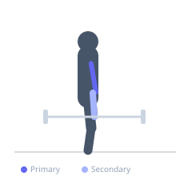
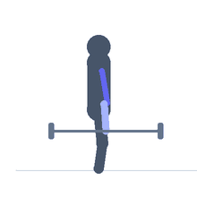

Exercise guide / EZ Bar Preacher Curl 21s
EZ Bar Preacher Curl 21s
A preacher curl 21s protocol using an EZ bar on a preacher bench. The preacher bench eliminates cheating by fixing the upper arm against the pad, and the 21s protocol applies partial and full-range stress to maximize bicep time under tension.
Primary muscles
biceps brachii short head
brachialis
Secondary muscles
biceps brachii long head
brachioradialis
Stabilizers
flexor carpi radialis
Equipment
EZ-Curl Bar
Preacher Bench


Starting position
- Sit at a preacher bench with the upper arms firmly against the angled pad. Grip an EZ bar with an underhand grip.
Setup
- Set up the preacher bench. Load a light EZ bar. Position upper arms on the pad.
Steps
- Step 1 (reps 1-7): Curl from full extension to the halfway point (forearms parallel to floor). Return and repeat 7 times.
- Step 2 (reps 8-14): Start from the halfway point and curl to full contraction. Return to halfway and repeat 7 times.
- Step 3 (reps 15-21): Perform 7 full-range reps from full extension to full contraction.
Coaching cues
- Upper arms stay on the pad
- Feel the bottom stretch in segment 1
Breathing
- Exhale on each curl, inhale on each lowering.
Range of motion
- Full extension (arms straight) in segment 1. Full contraction in segment 2 and 3.
Tempo
- 2-0-2-0 per rep
Common mistakes
- Lifting the upper arms off the pad to assist the movement
- Using too heavy a weight
Safety
- Upper arms must remain on the pad throughout — the pad is the stabilizer
Training
- hypertrophy: 8–15 reps
- hypertrophy: 3–4 sets
- Rest: {'hypertrophy': 90}